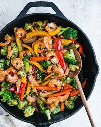

Shrimp Stir Fry

Shrimp Stir Fry
This shrimp stir fry is a go-to fast and healthy dinner! Use any veggies you like and this flavor-packed stir fry sauce.
Ingredients
For the shrimp stir fry
- 3 tablespoons sesame oil
- 1 lb. shrimp, deveined and shelled
- 4 cups broccoli
- 2 bell peppers
- 2 green onions/li>
For the stir fry sauce
- 1/4 cup soy sauce
- 6 tablespoons water
- 1 tablespoon rice vinegar
- 2 tablespoons sugar
- 1 tablespoon miso
- 2 teaspoons cornstarch
- 1/4 teaspoon garlic powder
Steps
- Thaw the shrimp, if frozen.
- Chop the veggies: Chop the broccoli. Thinly slice the bell peppers.
- Make the stir fry sauce: Whisk together all ingredients until a smooth sauce forms.
- Cook the vegetables: In a large skillet, heat 2 tablespoons oil over medium high heat. Add the broccoli or broccolini, bell pepper and mushrooms. Add 2 pinches kosher salt and cook 5 to 6 minutes, stirring occasionally, until crisp tender. Remove the vegetables to bowl.
- Cook the shrimp: Add the additional 1 tablespoon sesame oil to the pan. Add the shrimp and green onions. Cook for 1 to 2 minutes until the shrimp are almost opaque, turning once. Then add back the vegetables and the sauce. Reduce the heat to low and cook until the sauce is thickened.
go back